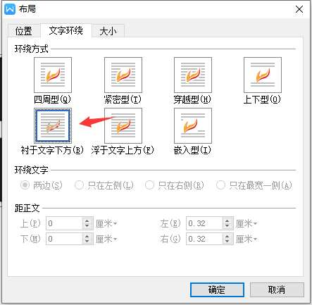
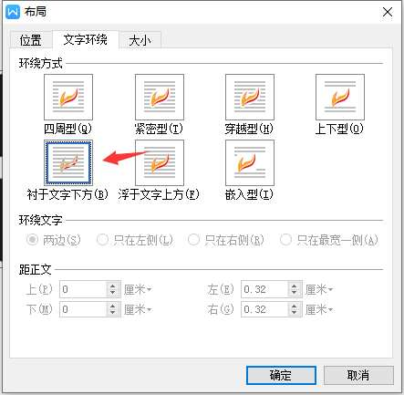

使用go unioffice让图片衬于文字下方
- 作者:
- 淡白
- 创建时间：
- 2020-10-11 12:45:48
- unioffice
摘要：该文章介绍了使用go处理office文档的开源库unioffice，并讨论了在处理word文档时遇到的问题。问题是如何将图片设置为封面背景时不挤压文字。作者发现了一种解决方案，通过修改文档的xml结构来实现。作者将两个文档进行了对比，找到了影响图片布局的属性，并通过unioffice库的API来修改这些属性，最终解决了问题。文章还给出了相关代码示例。
unioffice
使用go处理offce是一个开源库,不过这个库需要付费授权unioffice 没有相关文档只有github上的几个例子
遇到的问题
在处理word的时候需求是将图片设为封面背景,但是当图片添加进去后放大到页面大小会挤压文字
 我想实现的效果:
|
我想实现的效果:
| 没有文档我只找到了这个API
没有文档我只找到了这个APIt.SetTextWrapSquare()设置文字环绕图片,但是没有用还是解决不了.
尝试查看docx文件结构
据了解,word内部其实就是xml.
我首先直接用vscode打开查看,发现是个二进制文件.
后有发现原来可以解压处出来:
 在
在word文件夹下的document.xml就是主要文档内容
我首先将同一文档一个通过wps手动实现图片衬于文字下方,一个没有实现.
然后分别对比xml(需要先格式化一下不然压缩了的不好看)
原文档:
<w:p>
<w:r>
<w:drawing>
<wp:anchor
xmlns="http://schemas.openxmlformats.org/drawingml/2006/wordprocessingDrawing"
xmlns:a="http://schemas.openxmlformats.org/drawingml/2006/main"
xmlns:pic="http://schemas.openxmlformats.org/drawingml/2006/picture"
xmlns:r="http://schemas.openxmlformats.org/officeDocument/2006/relationships"
xmlns:w="http://schemas.openxmlformats.org/wordprocessingml/2006/main"
xmlns:wp="http://schemas.openxmlformats.org/drawingml/2006/wordprocessingDrawing"
xmlns:xml="http://www.w3.org/XML/1998/namespace" simplePos="0" relativeHeight="0" behindDoc="1" locked="0" layoutInCell="0" allowOverlap="1">
<wp:simplePos x="0" y="0"/>
<wp:positionH relativeFrom="page">
<wp:align>center</wp:align>
</wp:positionH>
<wp:positionV relativeFrom="page">
<wp:align>bottom</wp:align>
</wp:positionV>
<wp:extent cx="7574411" cy="3074404"/>
<wp:wrapNone/>
<wp:docPr id="116590931" name=""/>
<wp:cNvGraphicFramePr/>
<a:graphic>
<a:graphicData uri="http://schemas.openxmlformats.org/drawingml/2006/picture">
<pic:pic
xmlns="http://schemas.openxmlformats.org/drawingml/2006/picture"
xmlns:pic="http://schemas.openxmlformats.org/drawingml/2006/picture"
xmlns:xml="http://www.w3.org/XML/1998/namespace">
<pic:nvPicPr>
<pic:cNvPr id="116590931" name=""/>
<pic:cNvPicPr/>
</pic:nvPicPr>
<pic:blipFill>
<a:blip r:embed="rId5"/>
<a:stretch>
<a:fillRect/>
</a:stretch>
</pic:blipFill>
<pic:spPr>
<a:xfrm>
<a:off x="0" y="0"/>
<a:ext cx="1876" cy="740"/>
</a:xfrm>
<a:prstGeom prst="rect"/>
</pic:spPr>
</pic:pic>
</a:graphicData>
</a:graphic>
</wp:anchor>
</w:drawing>
</w:r>
</w:p>
修改过
<w:p>
<w:bookmarkStart w:id="0" w:name="_GoBack"/>
<w:r>
<w:drawing>
<wp:anchor distT="0" distB="0" distL="114935" distR="114935" simplePos="0" relativeHeight="0" behindDoc="1" locked="0" layoutInCell="0" allowOverlap="1">
<wp:simplePos x="0" y="0"/>
<wp:positionH relativeFrom="page">
<wp:align>center</wp:align>
</wp:positionH>
<wp:positionV relativeFrom="page">
<wp:align>bottom</wp:align>
</wp:positionV>
<wp:extent cx="7574280" cy="3074670"/>
<wp:effectExtent l="0" t="0" r="7620" b="11430"/>
<wp:wrapNone/>
<wp:docPr id="116590931" name="图片 116590931"/>
<wp:cNvGraphicFramePr/>
<a:graphic
xmlns:a="http://schemas.openxmlformats.org/drawingml/2006/main">
<a:graphicData uri="http://schemas.openxmlformats.org/drawingml/2006/picture">
<pic:pic
xmlns:pic="http://schemas.openxmlformats.org/drawingml/2006/picture">
<pic:nvPicPr>
<pic:cNvPr id="116590931" name="图片 116590931"/>
<pic:cNvPicPr/>
</pic:nvPicPr>
<pic:blipFill>
<a:blip r:embed="rId7"/>
<a:stretch>
<a:fillRect/>
</a:stretch>
</pic:blipFill>
<pic:spPr>
<a:xfrm>
<a:off x="0" y="0"/>
<a:ext cx="1876" cy="740"/>
</a:xfrm>
<a:prstGeom prst="rect">
<a:avLst/>
</a:prstGeom>
</pic:spPr>
</pic:pic>
</a:graphicData>
</a:graphic>
</wp:anchor>
</w:drawing>
</w:r>
<w:bookmarkEnd w:id="0"/>
</w:p>
发现
在经过几次反复对照修改后
发现决定图片衬于文字下方的属性behindDoc="1"同时 <wp:wrapNone/>(图片不挤兑文字)
通过以下代码修改
t.SetTextWrapNone()
t.X().BehindDocAttr=true
大致代码如下:
bgImg, err := common.ImageFromFile(bgPath)
if err != nil {
logger.Error(err)
}
//向文档添加图片
imgRef, err := doc.AddImage(bgImg)
//绘制图片
t, err := doc.AddParagraph().AddRun().AddDrawingAnchored(imgRef)
if err != nil {
logger.Error(err)
}
//设置图片在文档中心
t.SetAlignment(wml.WdST_AlignHCenter, wml.WdST_AlignVCenter)
//设置大小为页面大小
t.SetSize(21*measurement.Centimeter, 29.7*measurement.Centimeter)
//文字不环绕图片
t.SetTextWrapNone()
//图片衬于文字下方
t.X().BehindDocAttr=true